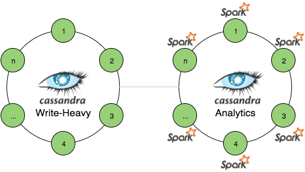
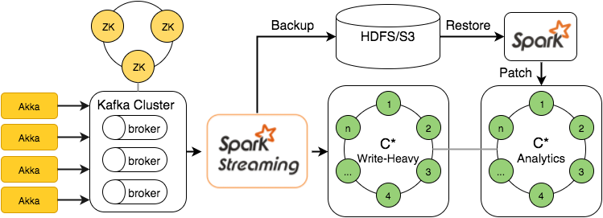

这篇博客是talk given at Big Data AW meetup这篇文章的后续， 并且关注于不同的用例及设计方法，从而使用SMACK(Spark, Mesos, Akka, Cassandra, Kafka) Stack构建多个可扩展的数据处理平台。 当stack足够简洁并且只包含少量的组件，它就有可能实现不同的系统设计，这样就可以既有批处理，又有流处理。 但是也会有更加复杂的Lambda架构和Kappa架构。所以让我们通过概述快速的达成理解上的一致，然后继续看产品项目经验里总结的设计和实例。
概述

Spark - 分布式、大规模数据处理的快速并且通用的引擎
Mesos - 集群资源管理系统，提供了高效的分布式应用程序的资源隔离和共享
Akka - 是一个工具包和运行时间，他能够在Java虚拟机上构建高并发，分布式和高容错的消息驱动应用。
Cassandra - 分布式、高可用的数据库，设计用于处理多个数据中心的大量的数据
Kafka - 一种用于处理实时数据馈送的高吞吐量、低延迟的分布式发布订阅消息系统
存储层: Cassandra
 Cassandra拥有着众所周知的高可用性高吞吐量的特征，并且能够处理大量的写入负载和生存集群节点故障。 在CAP定理条件中，Cassandra为操作提供了可调的一致性和可用性。
Cassandra拥有着众所周知的高可用性高吞吐量的特征，并且能够处理大量的写入负载和生存集群节点故障。 在CAP定理条件中，Cassandra为操作提供了可调的一致性和可用性。
更有趣的是，当涉及到数据处理，Cassandra可以线性扩展（通过往集群增加节点来解决增大的负载），另外他还提供了跨数据中心(XDCR)复制的能力，实际上XDCR不仅提供了复制的能力，更多的提供了许多有趣的用例能够被使用:
- 地理分布的数据中心可以按特定的区域或者按最靠近客户的区域来处理数据
- 跨数据中心的数据迁移：在出现故障后做恢复或将数据移动到一个新的数据中心
- 工作负载的操作和分析分离
但是所有的功能都有他们自己的价值，对Cassandra来说，它的价值就是它的数据模型, 它可以被认为是作为嵌套排序图，分布在集群节点的按集群列排序或分组的分区键值和条目。接下来是一个小例子:
CREATE TABLE campaign(
id uuid,
year int,
month int,
day int,
views bigint,
clicks bigint,
PRIMARY KEY (id, year, month, day)
);
INSERT INTO campaign(id, year, month, day, views, clicks)
VALUES(40b08953-a…,2015, 9, 10, 1000, 42);
SELECT views, clicks FROM campaign
WHERE id=40b08953-a… and year=2015 and month>8;
在一定范围内获得明确的数据，键值必须也是明确的，并在列表中的最后一列以外的任何范围子句都不允许。 此约束被引入到限制多个扫描不同的范围，这将产生随机访问磁盘和降低性能。这意味着要小心设计数据模型对阅读查询限制读/扫描的量，从而当它来支持新查询时导致较小的灵活性。这是一些 C* 数据模型 101 的幻灯片，提供了一些CQL表是如何被本质地体现的例子。
但是如果有一些表需要和其他一些表连接呢？让我们考虑下以下情况：计算给定月份里的所有campaigns中的每个campaign的总视图。
CREATE TABLE event(
id uuid,
ad_id uuid,
campaign uuid,
ts bigint,
type text,
PRIMARY KEY(id)
);
根据给定的模型，唯一的办法是读取所有的campaigns，读取所有的events，将符合要求的部分（匹配campaign id的）相加，并且指给campaign。由于存储在Cassandra里的数据量非常的大并不适合内存化，所以实施这样的应用程序非常有挑战性。因此处理这中数据就应该由一个分布式的方式来完成，而Spark则是一个完美的选择。
处理层: Spark
Spark操作的主要抽象概念是RDD(弹性分布式数据集, 元素的一种分布式集合)， 工作流程主要分为四个部分:
- RDD 操作(变换和行动)形式DAG (无回路有向图)
- DAG被拆分成多任务的多个阶段，然后提交到集群管理。
- 阶段结合了任务不需要重新分配。
- 任务跑在工人和结果上，然后返回给客户端
下面演示Spark和Cassandra如何一起解决上面的问题的:
val sc = new SparkContext(conf)
case class Event(id: UUID, ad_id: UUID, campaign: UUID, ts: Long, `type`: String)
sc.cassandraTable[Event]("keyspace", "event")
.filter(e => e.`type` == "view" && checkMonth(e.ts))
.map(e => (e.campaign, 1))
.reduceByKey(_ + _)
.collect()
通过spark-cassandra-connector ，Cassandra可以更加简单和直接的和Spark进行交互。 这里还有一个有趣的选项，将Spark和NoSQL存储一起工作 -- SaprkSQL，他将SQL声明转换成一系列的RDD运行。
case class CampaignReport(id: String, views: Long, clicks: Long)
sql("""SELECT campaign.id as id, campaign.views as views,
campaign.clicks as clicks, event.type as type
FROM campaign
JOIN event ON campaign.id = event.campaign
""").rdd
.groupBy(row => row.getAs[String]("id"))
.map{ case (id, rows) =>
val views = rows.head.getAs[Long]("views")
val clicks = rows.head.getAs[Long]("clicks")
val res = rows.groupBy(row => row.getAs[String]("type")).mapValues(_.size)
CampaignReport(id, views = views + res("view"), clicks = clicks + res("click"))
}.saveToCassandra(“keyspace”, “campaign_report”)
通过几行代码，他就能实现本身很复杂的原生的Lamba设计，但是这个例子只是为了显示多么容易可以做到这一点。
几乎映射归纳：让处理更接近数据
Saprk-Cassandra 连接器是一个数据局部性感知及从集群最近的结点读取数据从而减少通过网络传输的数据量。为了全面支持Spark-C*连接器数据局部性感知，Spark工人需要布置在所有Cassandra结点上。

除了Spark和Cassandra的搭配，也可以独立一个运作的（或者重写的）集群用作分析：
- 集群可以相对独立的被缩放
- 数据由Cassandra来复制，没有额外的工作
- 用于分析的集群有不同的读/写负载模式
- 用于分析的集群能包含额外的数据（如字典）和处理结果
- Spark资源影响仅受限于一个集群上
让我们再一次看看Spark应用部署选项:
 集群资源管理器中提供了三个主要选项：
集群资源管理器中提供了三个主要选项：
- Saprk 单机版 - Spark master和workers被安装和执行在一个独立的应用程序中（这很明显带来了一些ops开销，而且每个worker只支持静态资源分配）
- 如果你在用Hadoop生态系统，YARN是一个不错的选择
- Mesos最初被设计用于动态分配集群资源，不仅为了跑Hadoop应用，而且还可以处理各种各样的负载。
Mesos架构
 Mesos集群包含了多个负责提供资源和调度的Master结点和真正执行沉重任务的Slave结点。具有多个Masters ZooKeeper的HA模式是用于领导选举和服务发现。Mesos上执行的应用程序被称作框架，利用API来控制资源供应，并提交任务和Mesos。总体上任务执行流程包含以下步骤：
Mesos集群包含了多个负责提供资源和调度的Master结点和真正执行沉重任务的Slave结点。具有多个Masters ZooKeeper的HA模式是用于领导选举和服务发现。Mesos上执行的应用程序被称作框架，利用API来控制资源供应，并提交任务和Mesos。总体上任务执行流程包含以下步骤：
- Slaves 发布空闲的资源给Master
- Master发送资源提供给框架
- 调度回应每个任务所需的任务和资源
- Master发送任务给slaves
Spark，Mesos和Cassandra一起工作
如之前所说的，Saprk workers 应该配置在Cassandra结点上来加强数据局部性感知，这样可以降低网络传输量和Cassandra集群负载。下面是一个如何和Mesos一起实现的可行的部署场景。
- Mesos Masters和ZooKeepers搭配
- Mesos Slaves搭建在Cassandra结点上以加强Spark获得更好的数据局部性
- Spark二进制部署在所有的worker结点上，
spark-env.sh被配置了合适的master主终端和执行jar包路径 - Saprk的执行JAR包上传到S3/HDFS
通过提供安装Saprk的任务，在任何已经安装了Spark二进制文件以及包含实际工作逻辑的组件Jar包的worker上就可以调用简单的spark-submit命令来提交到集群
spark-submit --class io.datastrophic.SparkJob /etc/jobs/spark-jobs.jar
有一个已知的选项是运行Docker化的Spark，这样就不需要跨越每一个集群结点来分发二进制文件。
已计划的和长时间运行的任务执行
每一个数据处理系统迟早会面对跑两种任务的必要性：已计划/周期性任务就像定期分批聚合，长时间运行的任务，如流处理的例子。这两种类型的主要需求是容错 - 即使在集群结点失败的情况下，任务必须继续运行。Mesos生态系统在两个强大的框架下支持任何一种类型。
Marathon是一个为了长时间任务执行时容错的框架，他在ZooKeeper上支持HA模型，可以运行Docker，具有很好的REST API。下面是一个用于运行spark-submit shell命令的简单任务配置例子:

Chronos拥有和Marathon一样的特性，但是它是为了运行已计划的作业而设计的，并且在总体上是分布式的HAcron, 支持作业图表。下面是一个作为简单批处理脚本来实现S3压实作业配置的一个例子：
目前已经有大量的框架存在，同时也有很多框架有针对性的集成了Mesos资源管理功能到广泛使用的系统正在开发中。下面是指列出了其中的一些：
- Hadoop
- Cassandra
- Kafka
- Myriad: YARN on Mesos
- Storm
- Samza
摄取数据
到目前为止一切都挺好：设计了数据层，设置了资源管理，配置好了作业。仅剩的事情就是没有处理数据。
 假设输入的数据将很高几率到达终端，接收它将面临接下来的需求：
假设输入的数据将很高几率到达终端，接收它将面临接下来的需求：
- 提供高吞吐量/低延迟
- 有弹性
- 允许简易扩展
- 支持背压
背压不是必须的，但是对于处理负载峰值最好有。
Akka完美地符合这些需求，基本上他就是被设计成提供这些功能集合的。所以什么是Akka：
- 为JVM实现角色模型
- 基于消息和异步
- 加强没有分享的可变状态
- 将一个进程轻松扩展到机器集群
- 在父监督下，角色形成等级
- 不仅是并发的框架：akka-http, akka-streams, akka-persistence
下面是一个关于三个角色的简单的例子，一个角色处理JSON Http请求，一个角色将请求解析成域名模型案例类，还有一个角色保存这个类到Cassandra:
class HttpActor extends Actor {
def receive = {
case req: HttpRequest =>
system.actorOf(Props[JsonParserActor]) ! req.body
case e: Event =>
system.actorOf(Props[CassandraWriterActor]) ! e
}
}
class JsonParserActor extends Actor {
def receive = {
case s: String => Try(Json.parse(s).as[Event]) match {
case Failure(ex) => //error handling code
case Success(event) => sender ! event
}
}
}
class CassandraWriterActor extends Actor with ActorLogging {
//for demo purposes, session initialized here
val session = Cluster.builder()
.addContactPoint("cassandra.host")
.build()
.connect()
override def receive: Receive = {
case event: Event =>
val statement = new SimpleStatement(event.createQuery)
.setConsistencyLevel(ConsistencyLevel.QUORUM)
Try(session.execute(statement)) match {
case Failure(ex) => //error handling code
case Success => sender ! WriteSuccessfull
}
}
}
看起来仅仅几行代码就能够让一切都工作，但是当用Akka轻松的写原始数据（事件）到Cassandra，也会有一些陷阱：
- Cassandra是被设计成快速服务而不是批量处理，所以输入数据的预聚合处理是很需要的
- 聚合/汇总 的计算时间将会随着数据量的大小而成长
- 由于无状态设计模式，角色不适合处理聚合
- 微批处理可能部分解决该问题
- 原始数据依然需要某些可靠的缓存
Kafka作为输入数据的缓存
 为了保持输入的数据有一些保留，其进一步的预聚合/处理一些分布式提交日志可以被使用。在这里情况下，消费者将分批读取数据，处理成预聚合的形式并保存到Cassandra。 下面是一个利用akka-http发布从HTTP来的JSON数据到Kafak的例子：
为了保持输入的数据有一些保留，其进一步的预聚合/处理一些分布式提交日志可以被使用。在这里情况下，消费者将分批读取数据，处理成预聚合的形式并保存到Cassandra。 下面是一个利用akka-http发布从HTTP来的JSON数据到Kafak的例子：
val config = new ProducerConfig(KafkaConfig())
lazy val producer = new KafkaProducer[A, A](config)
val topic = “raw_events”
val routes: Route = {
post{
decodeRequest{
entity(as[String]){ str =>
JsonParser.parse(str).validate[Event] match {
case s: JsSuccess[String] => producer.send(new KeyedMessage(topic, str))
case e: JsError => BadRequest -> JsError.toFlatJson(e).toString()
}
}
}
}
}
object AkkaHttpMicroservice extends App with Service {
Http().bindAndHandle(routes, config.getString("http.interface"), config.getInt("http.port"))
}
消费数据： Spark Streaming
当Akka还能被用作从Kafka消费流数据，在你的生态系统里有Spark带来的Spark Streaming可以作为解决问题的一个选项：
- 它支持数据源的多样性
- 提供at-least-once语义
- 和Kafka Direct及幂等存储一起，exactly-once语义有效

从Kinesis来的消费事件流通过Spark Streaming的例子：
val ssc = new StreamingContext(conf, Seconds(10))
val kinesisStream = KinesisUtils.createStream(ssc,appName,streamName,
endpointURL,regionName, InitialPositionInStream.LATEST,
Duration(checkpointInterval), StorageLevel.MEMORY_ONLY)
}
//transforming given stream to Event and saving to C*
kinesisStream.map(JsonUtils.byteArrayToEvent)
.saveToCassandra(keyspace, table)
ssc.start()
ssc.awaitTermination()
为失败做设计：备份和补丁
通常这是任何系统最无聊的部分，但是当他有可能存在时它是非常重要的，进入系统的数据可能是无效的或者当所有分析数据中心都崩溃了。

所以为什么不存储数据在Kafka/Kinesis? 目前写在Kinesis的数据只保留一天，没有备份一旦发生失败，所有的处理结果都可能丢失。虽然Kafka支持更大保留周期，但是硬件所有权的成本需要被考虑，因为如S3存储的例子，和S3 SLA一样，更便宜比多个实例运行Kafka更好。
除了有备份恢复/修补策略，应该有前期的设计和测试，这样任何数据上的问题才能够很快被修复。程序员在聚合作业或复制数据上的错误会破坏计算结果的精确性，因此修复错误不应该成为大问题。通过在加强数据模型的幂等可以让所有的运行更简单，这样同一个运行的多数保留会产生相同结果。（举例：sql更新是幂等操作如果计数不增加）
下面是一个读取S3备份并加载到Cassandra的Spark业务的例子：
val sc = new SparkContext(conf)
sc.textFile(s"s3n://bucket/2015/*/*.gz")
.map(s => Try(JsonUtils.stringToEvent(s)))
.filter(_.isSuccess).map(_.get)
.saveToCassandra(config.keyspace, config.table)
大局观
用SMACK打造数据平台构建的高层次设计。
 总结，什么是SMACK栈：
总结，什么是SMACK栈：
- 包含了各种各样数据处理方案的简单的工具箱
- 久经考验和广泛使用的具有大型社区的软件
- 易扩展性和数据复制，同时保持较低的延迟
- 统一的为异构负载提供集群管理
- 适合各种类型应用的单一平台
- 为不同架构设计的平台实现（batch, streaming, Lambda, Kappa）
- 非常快速的将产品推到市场 （举例：MVP验证）